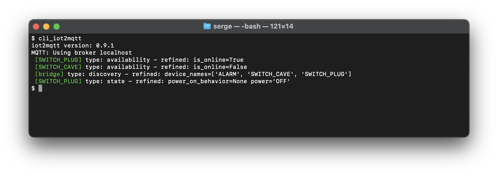

iot2mqtt: Simplifying IoT Solutions with MQTT Integration
“Less is More”
Introduction
iot2mqtt is a versatile Python library built upon the Paho™ MQTT client. It is designed to simplify IoT application development by providing a programmatic alternative to traditional home automation platforms, without the overpromises of no-code solutions.
Description
iot2mqtt offers a robust and flexible solution for integrating various IoT devices using the MQTT protocol. Whether you are looking to connect directly with devices or through gateways, iot2mqtt provides the tools you need to build reliable and scalable IoT applications.
Key Features
Programmatic Alternative: Provides more flexibility and control compared to traditional home automation platforms like openHAB, Home Assistant, and Jeedom.
Reliable Communication: Leverages the MQTT protocol to ensure reliable data transfer between devices.
Protocol-Agnostic: Supports both direct device integration over MQTT (e.g., Shelly, Tasmota) and gateway integration (e.g., Zigbee2MQTT, ring to MQTT, miflora to MQTT).
Abstract Devices: Comprehensive support for creating and managing abstract devices, simplifying the integration between different device models, providers, and protocols.
Getting Started
To get started with iot2mqtt, follow these steps:
Prerequisites
Python 3.x
IoT bridges if required (e.g., Zigbee2MQTT, ring to MQTT, miflora to MQTT)
Installation
The latest stable version is available in the Python Package Index (PyPi) and can be installed using
pip3 install iot2mqtt
or with virtualenv:
python3 -m venv venv
source venv/bin/activate # On Windows use `venv\Scripts\activate`
pip3 install iot2mqtt
Installation from Github
To obtain the code, you can clone the Github repository:
Clone the repository:
git clone https://github.com/slassabe/iot2mqtt.git
Navigate to the project directory:
cd iot2mqtt
(Optional) Create and activate a virtual environment:
python3 -m venv venv source venv/bin/activate # On Windows use `venv\Scripts\activate`
Install the required dependencies:
sudo pip3 install -r requirements.txt
Test installation
To verify that the installation was successful, you can use the cli_iot2mqtt command. This command will help you ensure that everything is set up correctly.
Open your terminal.
Run the following command:
cli_iot2mqtt
You should see output similar to the screenshot below, indicating that the command is working as expected.

Supported Devices and Protocol
Below is a table outlining the available codecs.
Protocol |
Model |
Availability |
Description |
|---|---|---|---|
Homie |
Miflora |
In progress |
|
Z2M |
NAS-AB02B2 |
Release 0.9.0 |
|
RING |
RingCamera |
In progress |
|
TASMOTA |
Shelly Plug S |
Release 0.9.0 |
|
SHELLY |
Shelly Plug S |
In progress |
|
TASMOTA |
Shelly Uni |
Release 0.9.0 |
|
SHELLY |
Shelly Uni |
In progress |
|
Z2M |
SRTS-A01 |
Release 0.9.0 |
|
Z2M |
TS0601_soil |
Release 0.9.0 |
|
Z2M |
SNZB-02 |
Release 0.9.0 |
|
Z2M |
SNZB-01 |
Release 0.9.0 |
|
Z2M |
SNZB-03 |
Release 0.9.0 |
|
Z2M |
ZBMINI-L |
Release 0.9.0 |
|
Z2M |
ZBMINIL2 |
Release 0.9.0 |
|
Z2M |
S26R2ZB |
Release 0.9.0 |